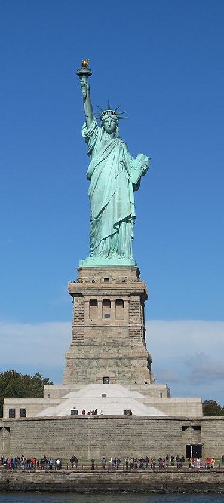
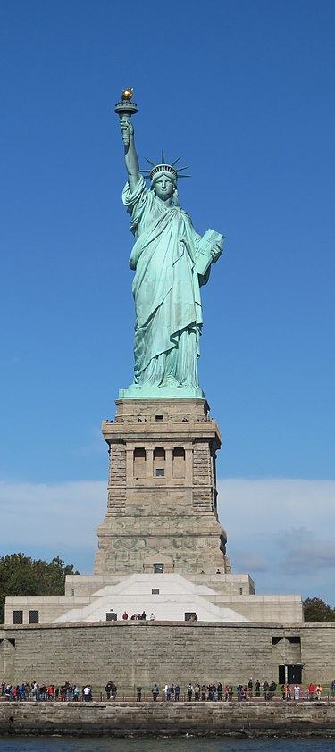

Travel
Chiangmai, Thailand


Geographical Location: Asia
Chiang Mai, nestled in the lush hills of northern Thailand, is a city that captivates with its unique blend of cultural richness and natural beauty. Situated approximately 700 kilometers north of Bangkok, Chiang Mai is the largest city in the region and serves as the capital of the province of the same name. Its geographical location is nothing short of enchanting, surrounded by forested mountains and picturesque landscapes. This charming city, often referred to as the "Rose of the North," offers visitors a delightful escape from the bustling urban life, inviting them to explore a realm where tradition meets modernity amidst a backdrop of stunning scenery.
The heart of Chiang Mai beats with a rich history that dates back over 700 years. Founded in 1296, the city was originally the capital of the ancient Lanna Kingdom. Today, remnants of its storied past are scattered throughout the city, from the ancient temples that dot the landscape to the preserved city walls and moats that harken back to a bygone era. Among the city's treasures is the revered Wat Phra Singh, a 14th-century temple known for its intricate architecture and revered Buddha image. Chiang Mai's historical sites provide a captivating glimpse into its heritage, making it a destination that seamlessly weaves together the past and present for visitors to explore and appreciate.
Photo Gallery

You can see hot balloons in Chiang Mai as well.

You can see cute elephants in Chiang Mai!

There are so many beautiful temples in Chiang Mai.
Sights you can't miss in Chiang Mai:
- Wat Phra That Doi Suthep
- Wat Chedi Luang
- Bhubing Palace
- Bhubing Palace
- Lanna Folklife Museum
New York City
 

Geographical Location: North America
New York City, often dubbed the "City that Never Sleeps," is a bustling metropolis like no other. Its iconic skyline, dominated by towering skyscrapers like the Empire State Building and One World Trade Center, symbolizes its ceaseless ambition and innovation. The city's cultural diversity is a defining feature, with neighborhoods like Chinatown, Little Italy, and Harlem offering a rich tapestry of traditions and flavors. From the bright lights of Times Square to the tranquility of Central Park, New York City offers a striking blend of urban excitement and natural beauty. It's a place where world-class museums, theaters, and restaurants cater to a global audience, making it a beacon for culture and creativity.
Beyond the surface, New York City's subway system and iconic yellow taxis make it remarkably accessible, allowing residents and visitors alike to explore its diverse offerings. This city is a stage for dreams to be pursued, a canvas for artistry to flourish, and a relentless engine of progress. It's a place where the past meets the future, and where every corner seems to tell a unique story, making New York City an irresistible destination for those seeking inspiration and adventure.
Photo Gallery

The Brooklyn Bridge is an iconic suspension bridge spanning the East River, connecting Manhattan and Brooklyn, known for its majestic architecture and historical significance.

The Flatiron Building, with its distinctive triangular shape and Beaux-Arts architecture, is a historic landmark nestled in the heart of Manhattan, epitomizing New York City's architectural charm.

Central Park is a sprawling urban oasis in the heart of Manhattan, offering a serene escape from the city's hustle and bustle with its lush greenery, scenic waterways, and diverse recreational opportunities.
Sights you can't miss in New York:
- Empire State Building
- Chelsea Market
- The Guggenheim
- Brooklyn Botanic Garden
- MoMA
Boston


Geographical Location: North America
Boston, Massachusetts, is a city where American history comes to life. With its storied past, including the Boston Tea Party and the Battle of Bunker Hill, the city preserves its heritage through historic landmarks and the Freedom Trail. Beyond history, Boston is a vibrant cultural and academic center, home to renowned universities like Harvard and MIT, as well as world-class museums, theaters, and a thriving sports scene.
Boston's neighborhoods offer a diverse range of experiences, from the cobblestone streets of Beacon Hill to the trendy shops and restaurants of the South End. The city's green spaces, such as the Boston Common and the Emerald Necklace parks, provide a peaceful escape from the urban hustle, while the bustling waterfront and delicious seafood cuisine showcase its maritime roots. Boston's unique blend of history, culture, and local charm makes it a captivating destination for visitors and a beloved home for its residents.
Photo Gallery

Harvard University is an iconic Ivy League institution in Cambridge, Massachusetts, renowned for its academic excellence and historic prestige.

The Charles River is a picturesque waterway winding through the Boston metropolitan area, offering scenic views and recreational opportunities for residents and visitors alike.

Boston Common is a historic and beloved urban park located in the heart of Boston, serving as a tranquil oasis amid the city's hustle and a gathering place for both residents and tourists.
Sights you can't miss in Boston:
- Fenway Park
- Quincy Market
- North End
- Boston Common
- Freedom Trail
Seattle


Geographical Location: North America
Seattle, nestled in the Pacific Northwest, harmoniously blends city living with nature's beauty. The iconic Space Needle stands tall, offering sweeping views of mountains and water. Seattle's cultural scene thrives with museums, theaters, and a rich music history, while its commitment to sustainability and outdoor activities makes it a haven for nature lovers.
Seattle, birthplace of Starbucks, is a coffee lover's paradise. Distinct neighborhoods like Pioneer Square and Capitol Hill offer diverse experiences, and Pike Place Market bustles with fresh seafood and artisanal goods. Seattle's fusion of innovation, natural allure, and cultural richness makes it a compelling and inviting city.
Photo Gallery

The Space Needle is an iconic Seattle landmark, soaring above the city with its futuristic design and offering stunning panoramic views of the surrounding landscape.

Pike Place Market is a bustling and historic marketplace in Seattle, renowned for its vibrant atmosphere, fresh seafood, and artisanal goods.

Mount Rainier is a majestic stratovolcano towering over the Pacific Northwest, known for its year-round snow-capped peak and breathtaking alpine landscapes.
Sights you can't miss in Seattle:
- Museum of Pop Culture
- Seattle Great Wheel
- Ballard Locks
- Kerry Park
- Museum of flight
Hangzhou


Geographical Location: Asia
Hangzhou, situated in eastern China, is a city that seamlessly blends ancient heritage with natural splendor. At the heart of its allure lies the iconic West Lake, a UNESCO World Heritage Site celebrated for its picturesque landscapes. Here, serene waters mirror the surrounding lush gardens, historic temples, and quaint tea houses, creating a tranquil oasis in the heart of the city. West Lake has been an enduring muse for poets, scholars, and artists for centuries, offering a captivating escape where willow trees gracefully sway, lotus flowers bloom, and visitors can glide across its waters on paddle boats, connecting with the city's deep-rooted love for nature.
Hangzhou is also famous for its Longjing tea, a prized variety of green tea cultivated in the nearby rolling hills. Enthusiasts can partake in traditional tea ceremonies, explore centuries-old tea plantations, and gain insight into the meticulous art of tea production passed down through generations. This rich tea culture, alongside the city's modernity and technological prowess, paints a vivid portrait of Hangzhou—a place where tradition harmonizes with innovation, making it a captivating destination for those seeking a glimpse into China's multifaceted cultural heritage.
Photo Gallery

West Lake is a UNESCO World Heritage Site in Hangzhou, China, celebrated for its serene waters, enchanting gardens, historic temples, and a profound cultural connection to classical Chinese landscapes.

Lingyin Temple, located near West Lake in Hangzhou, is a renowned ancient Buddhist temple known for its rich history, intricate architecture, and serene natural surroundings.

Alibaba Group is a multinational conglomerate based in China, known for its e-commerce platforms, cloud computing services, and digital technology innovations, playing a pivotal role in shaping the global digital economy.
Sights you can't miss in Hangzhou:
- Fei Lai Feng
- Xixi Wetland Park
- Gu Shan
- Ping Hu Qiu Yue
- Prince Bay Park
Antonella